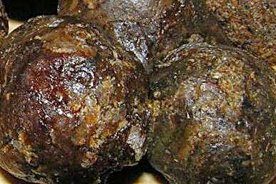

Смолиста і липка на дотик речовина, зібрана бджолами з бруньок дерев (тополі, берези, осики і ін.) після збагачення
своїми ферментами, перетворюється ними в коштовний продукт, який називається прополісом. Слово «propolis» латинського
походження і полягає воно з двох частин: «про» означає «перед», а «поліс» переводиться як «місто».
Вхід в своє «місто» бджоли частенько закладають прополісом, запобігаючи проникненню через льоток зайвого холоду і
вологи. Звідси витікає сенс самого слова «прополіс» – те що перед містом, перед вуликом.
Прополіс активно
використовується бджолами і як антисептик для дезинфекції вулика зсередини. Завдяки ньому у вулику завжди стоїть
приємний аромат і дотримується повна стерильність.
Людство з прадавніх часів використовує прополіс в лікувальних цілях. Вперше згадки про нього дійшли до нас з історії
Давнього Єгипту, де прополіс активно використовувався з метою муміфікації фараонів. Сьогодні прополіс - це широко
поширений природний антибіотик.
Бджоли використовують прополіс для консервації меду, дезинфекції стільників з личинками, додаючи його до складу воскових кришечок для запечатування стільників. Така печатка називається забрусом і зрізається бджолярями при відкачуванні меду. Великий вміст прополісу наділяє забрус коштовними лікарськими властивостями.